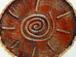
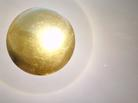

|
|
|
 |
| |
Développement personnel et évolution de conscience |
|
|
|
| |
Introduction ; Les trois phases fondamentales de l’éveil |
HAUT |
|
|
La première étape de l'expansion de conscience est la reconnexion au soi et le déconditionnement du mental. Ils permettent d’acquérir très rapidement une nouvelle philosophie de vie et une juste conscience de l’esprit que nous sommes tout en nous libérant des contradictions de notre mental.
Une véritable renaissance ! Vous serez dès lors capable de traverser la vie sans heurts, sachant relativiser ce qui doit l’être, grâce à un nouveau regard sur vous-même et sur le monde qui vous entoure.
Ce travail de base vous permettra ainsi de retrouver votre véritable chemin de vie et de lumière, celui pour lequel vous êtes venus vous incarner sur cette terre. Il est la clef d'un véritable épanouissement personnel et spirituel.
Dès lors, toutes formes d'explorations et d'expérimentations de votre dimension spirituelle seront à votre portée. Le voyage chamanique, la projection astrale, et les régressions mémorielles (vies antérieures) font partie des nombreuses possibilités de voyage intérieur et de pratique chamanique que je propose, afin d'accompagner plus loin ceux qui le désirent dans leur cheminement spirituel.
Enfin, le programme d’éveil à travers les 13 principes de la création universelle (Les 13 Marches de l'Eveil), permettra aux plus avancés, d’acquérir la conscience émotionnelle et les connaissances intellectuelles suffisantes à la réalisation de l’être, et à l’aboutissement du questionnement existentiel.
|
|
| |
Reconnexion au "Soi" et déconditionnement du mental |
HAUT |
|
|
 La reconnexion à notre être intérieur, ou enfant intérieur, et le déconditionnement du mental constituent la base indispensable à tout véritable chemin d’éveil et d’expansion de la conscience. La reconnexion à notre être intérieur, ou enfant intérieur, et le déconditionnement du mental constituent la base indispensable à tout véritable chemin d’éveil et d’expansion de la conscience.
Ce travail de fond s’articule en quatre temps, Il s’agit des quatre premières étapes clefs fondamentales qu’il m’a été permis de vivre durant mon voyage initiatique de 12 ans.
Ce processus d’éveil se déroule généralement sur 4 séances espacées de une à deux semaines chacune, puis d’une séance de contrôle et d’ancrage, environ un mois plus tard. Il s’agit donc d’un processus très rapide et très profond, soyez prêt à accueillir le changement.
Deux pierres seront harmonisées pour vous accompagner sur ce nouveau chemin d’éveil/tout au long de ce processus. Un CD vous permettant de réaliser chez vous des séances d’équilibrage énergétique et d’introspection vous accompagnera également pour renforcer et accélérer votre progression.
Les 4 étapes de la reconnexion au "Soi" et du déconditionnement du mental :
La première étape consiste en une première plongée dans votre univers intérieur, vers un état méditatif profond afin de ressentir peut-être pour la première fois l’unité de l’esprit que vous êtes. Autant la recherche d'un tel état méditatif peut être longue et fastidieuse lorsque l'on cherche seul, autant cela est accessible à tous dès la première séance, dès lors que l'on accepte de se laisser guider.
Suite à cette première étape, vous ressentirez déjà un nouvel élan sur votre chemin d’éveil et verrez votre potentiel énergétique et spirituel se réveiller.
La deuxième étape, la plus importante concerne la reconnexion à son "enfant intérieur".
Qui est cet enfant intérieur ? Rappelez-vous les moments de jeux et d'insouciance de votre enfance, l’arbre dans lequel vous aimiez grimper, le ruisseau dans lequel vous barbotiez, votre premier vélo ou vos parties de cache-cache, ces moments où vous étiez simplement vous-même ! Votre "enfant intérieur", c'est cet enfant authentique joueur et rieur, cet enfant de l'univers, heureux, libre et intact que vous étiez avant que ne s'abatte sur vous le poids du conditionnement familial et social, de vos traumatismes et de vos peurs. Celui que vous étiez avant que l'on commence à vous dire : "ne pleure plus tu es grand(e)" et que l'on vous demande de cesser d'être tel que vous étiez, pour devenir cet autre "vous-même" que les autres attendaient de vous.
En reconnectant votre enfant intérieur, vous retrouverez, une juste conscience de vous-même e ainsi que votre plein potentiel énergétique et spirituel.
Nous sommes tous limités dans nos souvenirs conscients, mais en séances nous pouvons remonter très loin, et jusqu'avant la naissance s'il le faut, pour retrouver le souvenir intact de "l'enfant intérieur", clef de la guérison, et base à toute évolution de conscience.
Suite à cette deuxième étape, vous découvrirez un nouveau souffle dans votre vie. Vous allez pouvoir commencer à vous déconditionner et à réapprendre à être vous-même. A vous redécouvrir, vous réinventer, tel que vous êtes au tout au fond de vous et réapprendre à vivre en fonction de ce que vous ressentez comme juste, et ayant légitimement une place dans votre vie, et non plus en fonction de votre conditionnements, de vos habitudes ou de vos automatismes.
Suite à cette deuxième étape, en retrouvant votre dimension spirituelle et mystique, vous découvrirez un nouveau souffle dans votre vie, vous vous rappellerez enfin qui vous êtes vraiment et grâce à cette nouvelle conscience, vous allez pouvoir commencer à vous déconditionner et à réapprendre à vivre en fonction de ce que vous ressentez comme juste, et ayant légitimement une place dans votre vie.
La troisième étape permet prendre conscience de nos "liens d'influence négative du mental". Ces liens symbolisent la puissance avec laquelle votre mental vous dicte votre conduite et oppose une résistance au changement. Car votre mental, sous le poids de vos mémoires traumatiques, et conditionné par des années d'éducation des décennies de pression sociale et des siècles de doctrine, s'est enfermé dans des schémas, des peurs et des valeurs qui ne sont pas les vôtres.
Suite à cette troisième étape, vous pourrez poursuivre plus loin ce déconditionnement du mental et renforcer votre détermination à vous sortir de ce conditionnement, même si le mental fera encore l’impasse sur beaucoup de chose !
La quatrième étape, vous permettra de briser définitivement ces "liens d'influence négative". Afin de vous libérer définitivement de ce conditionnement, de vous libérer enfin du poids du regard et du jugement des autres, et de vous sentir enfin le droit d'être vous-même, pour vivre de la façon, et selon les valeurs qui sont les vôtres.
Ainsi, votre intuition, votre conviction profonde et votre "voix intérieure" vous assureront de reprendre pleinement confiance en vous, et de vous accorder désormais tout le respect, l'amour et l'attention auxquels vous avez droit. Vous pourrez dès lors vous épanouir pleinement sur votre chemin de vie, de lumière et d’éveil.
Ce travail se déroule généralement en séance privée, mais une cession en groupe est prévue à Lausanne Les 2 avril - 15 avril - 1er mai - 6 mai 2014 dans le cadre du Cercle de voyage chamanique de Lausanne
|
|
| |
Voyages intérieurs et méditations guidées |
HAUT |
|
|
Pour tous ceux qui désirent expérimenter plus loin les capacités de l'esprit, le voyage intérieur permet d’expérimenter des états de conscience modifiés (sans aucune prise de substance psychotrope) et de de réaliser ainsi les capacités insoupçonnées de notre esprit et la richesse de notre univers intérieur.
Le voyage chamanique : est un « rêve conscient » permettant de rencontrer ses animaux totems, son animal guide et son pouvoir animal, qui vous aideront à mieux comprendre celui que vous êtes, vos défauts et vos points forts. Mais le monde du rêve chamanique est aussi un monde ou l’inconscient peut librement s’exprimer et nous communiquer bon nombre d’informations utiles à notre compréhension, c’est aussi un rite de guérison. (Plus d’info sur la page chamanisme)
Le voyage astral ou projection de conscience, permet de projeter sa conscience, « sortir de son corps » et d’aller ou bon vous semble dans ce monde terrestre ou dans des « réalités parallèles à celui-ci» et d’en ramener des observations utiles à l’expansion de votre conscience et à votre développement personnel.
La régression mémorielle permet d’explorer les mémoires oubliées de notre enfant intérieur et de revisiter les souvenirs lointains de nos vies antérieures, et de trouver les réponses à notre quête existentielle.
 L'éveil de la Kundalini est une expérience énergétique et spirituelle intense qui permet d'ouvrir pleinement notre canal énergétique Terre-Ciel et d'augmenter notre réceptivité et notre niveau d'énergie vitale. L'éveil de la Kundalini s'effectue en faisant remonter cette énergie fondamentale, chakra par chakra, du creux du bassin jusqu'au sommet du crâne, jusqu'à la faire jaillir par le chakra de la couronne... L'éveil de la Kundalini est une expérience énergétique et spirituelle intense qui permet d'ouvrir pleinement notre canal énergétique Terre-Ciel et d'augmenter notre réceptivité et notre niveau d'énergie vitale. L'éveil de la Kundalini s'effectue en faisant remonter cette énergie fondamentale, chakra par chakra, du creux du bassin jusqu'au sommet du crâne, jusqu'à la faire jaillir par le chakra de la couronne...
Dans le cadre thérapeutique un travail sur la Kundalini permet également de retrouver et/ou de stimuler sa libido, tout en redécouvrant l'aspect sacré et donc légitime de la sexualité. (Tantra)
|
|
| |
Eveil pour les plus avancés (Les 13 Marches de l'Eveil) |
HAUT |
|
|
Les 13 principes fondamentaux de la création universelle
 Pour tous ceux ayant déjà expérimenté et réalisé leur dimension spirituelle et désirant aller encore plus loin dans la conscience du tout, le "Soi". Je propose un programme d'éveil avancé afin de vous permettre de vous positionner correctement par rapport au plan cosmique et divin. Pour tous ceux ayant déjà expérimenté et réalisé leur dimension spirituelle et désirant aller encore plus loin dans la conscience du tout, le "Soi". Je propose un programme d'éveil avancé afin de vous permettre de vous positionner correctement par rapport au plan cosmique et divin.
Toutes les religions ou courants spirituels parlent de la même chose, mais sous une forme différente. Comprendre l'essence commune à toutes ces approches permet d'en saisir le fond, sans se heurter à la forme. Ce programme d’éveil avancé permet de se faire une idée beaucoup plus juste de ce qu'est l’ordre cosmique et le divin ; un ensemble de lois cosmiques qui régissent le cosmos et qui se retrouvent en toutes choses, ainsi qu’une conscience unique, car n'y a qu'une conscience dans l'univers. Qu'on l'appelle "Dieu"," Allah", "Bouddha", ou "Krishna", le "Soi" est LA conscience universelle, et nous sommes tous une projection de cette conscience unique.
Ce programme d’éveil avancé a donc pour objectif de vous amener à une compréhension suffisamment large de votre implication dans le cosmos pour vous permettre de trouver les réponses à toutes les questions existentielles qui sont les vôtre et atteindre un niveau d’éveil laissant la place au détachement et à la contemplation.
 Ce programme s'articule en 13 étapes, 13 voyages intérieurs vers autant de façons différentes de considérer le tout. Tout d'abord, le "un", le tout dans son entier, l'unité, vous voyagerez à travers les "macrocosmes et microcosmes". Ensuite le deux, les deux pôles opposés du "yin/yang", et son enseignement qui va bien au-delà de ce que l'on peut imaginer. Ensuite La Trinité, le tout fractionné e par trois, "Père-Mère-Enfant" et le principe créateur. Puis par quatre, "les quatre points cardinaux". Par cinq, les cinq éléments, etc.…Jusqu'à 13, l'aboutissement, la réalisation. Ce programme s'articule en 13 étapes, 13 voyages intérieurs vers autant de façons différentes de considérer le tout. Tout d'abord, le "un", le tout dans son entier, l'unité, vous voyagerez à travers les "macrocosmes et microcosmes". Ensuite le deux, les deux pôles opposés du "yin/yang", et son enseignement qui va bien au-delà de ce que l'on peut imaginer. Ensuite La Trinité, le tout fractionné e par trois, "Père-Mère-Enfant" et le principe créateur. Puis par quatre, "les quatre points cardinaux". Par cinq, les cinq éléments, etc.…Jusqu'à 13, l'aboutissement, la réalisation.
"Om Namah Shivaya" (Je salue le dieu qui est en toi !)
|
|
| |
Mise en œuvre et déroulement d’une séance d’éveil et d'expansion de conscience |
HAUT |
|
|
On laisse généralement une à deux semaines entre chaque séance durant la première phase d’éveil, en suite, c’est à chacun de trouver son rythme et d'espacer les séances dans le temps, en fonction de ses envies et sa capacité à assimiler. Deux pierres vous accompagneront dans votre cheminement spirituel, elles seront harmonisées à votre vibration afin de permettre le réajustement et la synchronisation les deux partie de l’être que sont le mental, et l’esprit.
Une séance dure deux heures. Elle est composée d’un entretien (anamnèse), afin, de mesurer l’évolution et les progrès accomplis, et d’apporter dans un premier temps la compréhension intellectuelle du concept abordé avant d’en acquérir la compréhension émotionnelle. Ensuite, une séance d’équilibrage énergétique et d’introspection d’une heure environ, telle que décrite ci-dessous, vient finaliser le rendez-vous.
Le patient enlève ses chaussures et s’allonge sur la table de soins, bercé par une musique douce (des vêtements confortables sont recommandés).
La séance commence par un balayage énergétique afin de débarrasser le corps de toutes les tensions. Ensuite l’équilibrage énergétique guidé commence avec l’apposition des pierres appropriées sur chacun des chakras, de façon à réguler les énergies à chaque niveau et à amener ainsi progressivement le patient dans un état de très profonde décontraction. Une fois toutes les pierres posées, le patient se trouve dans un état paradoxal, son corps est comme profondément endormi, mais l’esprit reste éveillé. Dans cet état particulier, le conscient et l’inconscient se trouvant en parfaite communication, le patient sera guidé vers un état méditatif profond, pour y effectuer les différentes étapes du programme d’éveil en cours.
Puis, après un dernier instant permettant au patient de se ressourcer et de profiter de cet état de bien-être et de sérénité, au contact de son univers intérieur, vient le moment du réveil, doux et progressif.
|
|
|
|
|